Tabelas em HTML5
Tags
Para criar tabelas em HTML usa-se a tag table.
Dentro dela você irá inserir linhas (table row) com a tag tr.
Nessas linhas, você irá inserir dados (table data) com a tag td. O fechamento dessas tags é opcional, mas o vscode já fecha automatciamente as tags.
Ex:
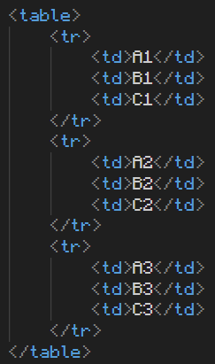Resultando nesta tabela, sem estilo algum:
| A1 | B1 | C1 |
| A2 | B2 | C2 |
| A3 | B3 | C3 |
Head, body e foot
Podemos adicionar titúlo, cabeçalho e rodapé também, com as seguintes tags:
- caption é o título da tabela, onde você inserirá apenas texto, sem outras tags dentro.
- thead (onde vai o cabeçalho, usando a tag th para preencher, que colocará em letras maiúsculas por padrão)
- tbody (onde vão as informações, usando a tag td para preencher, com letras minúsculas por padrão)
- tfoot (onde vai o rodapé, usando também a tag th para preencher)
Ex:
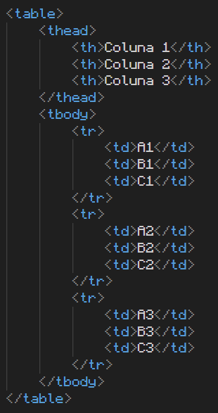Resultando em:
| Coluna 1 | Coluna 2 | Coluna 3 |
|---|---|---|
| A1 | B1 | C1 |
| A2 | B2 | C2 |
| A3 | B3 | C3 |
Scope
Você deve informar ao HTML da página qual o tipo de título ao usar a tag th, por exemplo, existem títulos que descrevem dados que vem abaixo dele, mas existem títulos que descrevem dados que vem na mesma linha.
Neste exemplo, os dados virão abaixo do título, então se usa a tag scope: col;
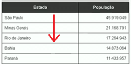Já neste outro exemplo, usa-se scope: row; Pois os dados referentes ao título estão na mesma linha.
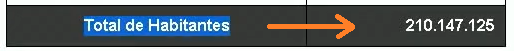Quando uma célula é mesclada, existe o scope em grupos de célula, group, que indica que o título serve para mais de uma coluna ou linha. Ex:
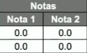Que seria escrito assim:
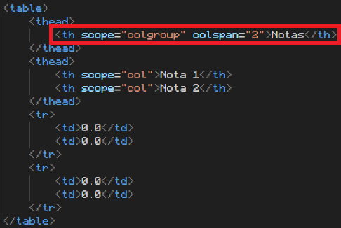Gerando a seguinte tabela:
| Notas | Nota 1 | Nota 2 |
|---|---|
| 0.0 | 0.0 |
| 0.0 | 0.0 |
Mesclagem de células
Você pode fazer uma configuração HTML para que uma célula ocupe mais de uma linha ou mais de uma coluna. Tornando ela uma célula mesclada.
Nesse exemplo as células B e D são céulas mescladas:
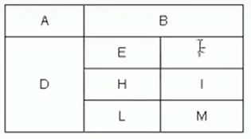Para fazer isso usa-se a configuração rowspan = "n" dentro da tag td ou th ou tf, para expandir verticalmente (fazendo a célula ocupar mais de uma linha baseado no valor de "n").
Ou a configuração colspan = "n", seguindo o mesmo raciocínio, só que para colunas, expandindo horizontalmente.
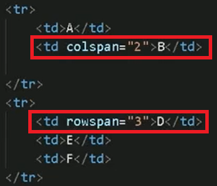Estilo
Podemos adicionar estilo nas tabelas.
Ex:
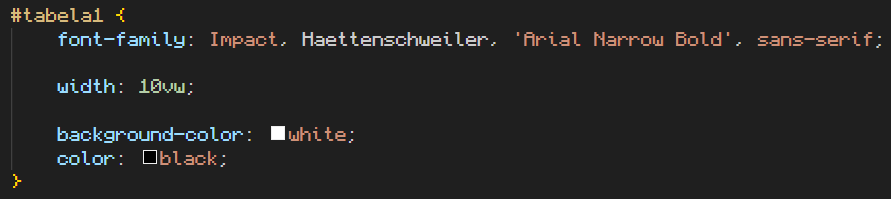Resultando em:
| A1 | B1 | C1 |
| A2 | B2 | C2 |
| A3 | B3 | C3 |
Estilos por grupo
Caso uma tabela tenha muitas células, precisariamos adicionar estilo em cada uma delas. Mas com a tag group, podemos adicionar estilo a todas de uma vez. Ex:
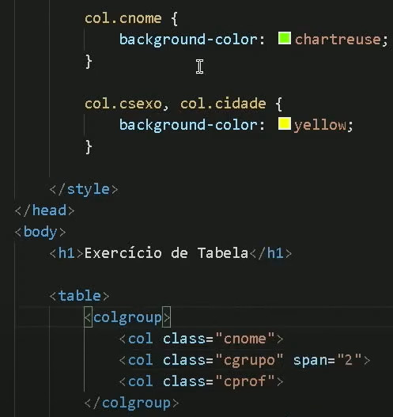Dentro da tag colgroup, existe a tag col, que corresponde a cada coluna da tabela. Para selecionar várias colunas, basta colocar o span. Depois, adicionar uma classe para usar estilos.
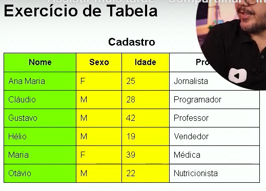Tabela Zebrada
Exemplo de tabela zebrada:
| A1 | B1 | C1 |
| A2 | B2 | C2 |
| A3 | B3 | C3 |
| A4 | B4 | C4 |
| A5 | B5 | C5 |
Para dar o efeito de tabela zebrada usamos a seguinte configuração de estilo:
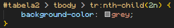Com esse seletor :nth-child(n) conseguimos escolher de quantos em quantos intevalos certa configuração vai existir, por exemplo, se n=2, ele vai acontecer a cada duas casas.
Você pode usar n=odd para configurar apenas as linhas ímpares, ou n=even, que é par.
Alinhamento vertical e horizontal
- text-align: left, center, right
- vertical-align: top, middle, bottom
Responsividade
Para evitar rolagem lateral nas tabelas quando exibidas em dispositivos móveis, deve-se fazer o seguinte procedimento:
- Envelopar a tabela numa tag div.
- Criar um estilo para essa div.
- No estilo, deve-se usar a configuração overflow-x: auto;, que criará uma barra de rolagem APENAS PARA A TABELA, mantendo a posiçao do resto dos itens na página.